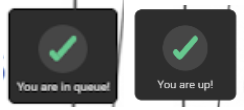

We conducted the usability test on Group 6’s prototype: EasyAsk, Zoom
built-in function that enables participants to better interact with
the presenter’s screen when they are showing a 3D object. Participants
are able to zoom in and out and point to specific places. Here is a
link to this group’s website for more information:
here!
To match the user population for which the design is intended, we
chose to test the prototype on 4 students. Every user had to complete
8 tasks and for each of these, they were not given any help unless
they requested it.
| Task | Accomplished? | Observations |
|---|---|---|
| Open the video-conferencing platform | Yes | n/a |
| Join a meeting | No | The user created a new meeting instead of joining an existing one |
| Find the EasyAsk icon and use it | Yes | n/a |
| Open the queue and see at which position you’re at | Yes | n/a |
| Dequeue yourself | Yes | n/a |
| Zoom-in and out the image | Yes, with help | Initially, the image was not appearing so the user was confused. When explained that they had to click on their name to simulate “being next”, they accomplished the task without any problem. |
| Point to a position of your interest | Yes | The user could click on the button to point and the arrows appeared but could not move them (functionality missing in the prototype). |
| Exit the meeting | Yes | n/a |
| Task | Accomplished? | Observations |
|---|---|---|
| Open the video-conferencing platform | Yes | n/a |
| Join a meeting | Yes | n/a |
| Find the EasyAsk icon and use it | Yes | n/a |
| Open the queue and see at which position you’re at | Yes | n/a |
| Dequeue yourself | Yes, with help | Initially, the user had accidentally clicked on their name so the image displayed appeared and they could not dequeue themselves. When assisted by the evaluator, the user had no trouble dequeuing themselves. |
| Zoom-in and out the image | Yes | Since the user had accidentally clicked on their name on the previous task, they already knew how to make the image appear and had not trouble finding the zoom-in and zoom-out buttons. |
| Point to a position of your interest | Yes | The user could click on the button to point and the arrows appeared but could not move them (functionality missing in the prototype). |
| Exit the meeting | Yes | n/a |
| Task | Accomplished? | Observations |
|---|---|---|
| Open the video-conferencing platform | Yes | n/a |
| Join a meeting | Yes | n/a |
| Find the EasyAsk icon and use it | Yes | n/a |
| Open the queue and see at which position you’re at | Yes | n/a |
| Dequeue yourself | Yes | The user knew where to click but when clicking accidentally clicked on their name (instead of the cross) so this made the image appear as if it was their turn. |
| Zoom-in and out the image | No | Initially, the image was not appearing so the user tried to click on the buttons at the top-left of the screen. When the evaluator explained that they had to click on their name to be next, they performed the task without problem. |
| Point to a position of your interest | Yes | The user could click on the button to point and the arrows appeared but could not move them (functionality missing in the prototype). |
| Exit the meeting | Yes | n/a |
| Task | Accomplished? | Observations |
|---|---|---|
| Open the video-conferencing platform | Yes | n/a |
| Join a meeting | Yes | n/a |
| Find the EasyAsk icon and use it | Yes | n/a |
| Open the queue and see at which position you’re at | Yes, with help | The user did not click on the notification ‘You’re in the queue’ and tried to click again the EasyAsk icon. Since this was doing nothing, they requested the user manual again and then was able to accomplish the task. |
| Dequeue yourself | Yes | n/a |
| Zoom-in and out the image | No | The user was confused at first because the image to zoom-in does not appear unless you click on your name. The user requested the manual but still couldn’t figure it out until the evaluator explained that they had to click on their name to simulate “being next”. |
| Point to a position of your interest | Yes | The user had to look in the manual again; they could click on the button to point and the arrows appeared but could not move them (functionality missing in the prototype). |
| Exit the meeting | Yes | n/a |
All members of our team completed the Usability Evaluation form: See the documents
For all test conducted, we obtained the following individual and average results from our test subjects.
| Subject 1 | Subject 2 | Subject 3 | Subject 4 | Average | |
| Duration | 4:49 | 3:14 | 3:36 | 4:02 | 3:55 |
| Task | Subject 1 | Subject 2 | Subject 3 | Subject 4 | Average |
| #1. Open the video-conferencing platform | Completed | Completed | Completed | Completed | 4/4 |
| #2. Join a new meeting | Not completed | Completed | Completed | Completed | 3/4 |
| #3. Find the EasyAsk icon and use it | Completed | Completed | Completed | Completed | 4/4 |
| #4. Open the queue and see at which position you’re at | Completed | Completed | Completed | Completed with help | 3/4 |
| #5. Dequeue yourself | Completed | Completed with help | Completed | Completed | 3/4 |
| #6. Zoom-in and out the image | Completed with help | Completed | Not Completed | Not Completed | 1/4 |
| #7. Point to a position of your interest | Completed | Completed | Completed | Completed | 4/4 |
| #8. Exit the meeting | Completed | Completed | Completed | Completed | 4/4 |
1 being strongly disagree and 10 being strongly agree
| Questions | Subject 1 | Subject 2 | Subject 3 | Subject 4 | Average |
| Q1. You felt like the system responded fast enough when using it | 8 | 10 | 7 | 10 | 8.75 |
| Q2.You would use the system in your every day life | 8 | 9 | 10 | 6 | 8.25 |
| Q3. You felt like you were having a conversation with another person | 9 | 8 | 1 | 1 | 4.75 |
| Q4. You believe this system could prove useful for your personal needs | 8 | 10 | 7 | 8 | 8.25 |
| Questions | Subject 1 | Subject 2 | Subject 3 | Subject 4 |
| Q. You find this prototype easy to use (1-5) | 5/5 | 4/5 | 5/5 | 5/5 |
| Q. Suggestions | n/a | I could not find the dequeue button easily. | n/a | n/a |
| Q. What features do you like about this prototype? | The application can usually find the best matching model or picture | The interface arrangement is clear and easy to follow |
-The interface arrangement is clear and easy to follow . -The application is handy and you use it quite often. -The application can usually find the best matching model or picture |
1 |
| Q. What features do you think should change in this prototype? | The arrows for pointing to specific places did not work | Add a button to go back when you make a mistake and want to undo an action | I find it useless to have to ask (put yourself in the queue) in order to be able to zoom in or out the image. | n/a |
| Tasks | Subject 1 | Subject 2 | Subject 3 | Subject 4 |
| #1. Open the video-conferencing platform | Straightforward | Straightforward | Straightforward | Straightforward |
| #2. Join a new meeting | The user created a new meeting instead of joining an existing one | Straightforward | Straightforward | Straightforward |
| #3. Find the EasyAsk icon and use it | Straightforward | Straightforward | Straightforward | Straightforward |
| #4. Open the queue and see at which position you’re at | Straightforward | Straightforward | Straightforward | The user did not click on the notification ‘You’re in the queue’ and tried to click again the EasyAsk icon. Since this was doing nothing, they requested the user manual again and then was able to accomplish the task. |
| #5. Dequeue yourself | Straightforward | Initially, the user had accidentally clicked on their name so the image displayed appeared and they could not dequeue themselves. When assisted by the evaluator, the user had no trouble dequeuing themselves. | The user knew where to click but when clicking accidentally clicked on their name (instead of the cross) so this made the image appear as if it was their turn. | Straightforward |
| #6. Zoom-in and out the image | Initially, the image was not appearing so the user was confused. When explained that they had to click on their name to simulate “being next”, they accomplished the task without problem. | Since the user had accidentally clicked on their name on the previous task, they already knew how to make the image appear and had no trouble finding the zoom-in and zoom-out buttons. | Initially, the image was not appearing so the user tried to click on the buttons at the top-left of the screen. When the evaluator explained that they had to click on their name to be next, they performed the task without problem. | The user was confused at first because the image to zoom-in does not appear unless you click on your name. The user requested the manual but still couldn’t figure it out until the evaluator explained that they had to click on their name to simulate “being next”. |
| #7. Point to a position of your interest | The user could click on the button to point and the arrows appeared but could not move them (functionality missing in the prototype). | The user could click on the button to point and the arrows appeared but could not move them (functionality missing in the prototype). | The user could click on the button to point and the arrows appeared but could not move them (functionality missing in the prototype). | The user had to look in the manual again; they could click on the button to point and the arrows appeared but could not move them (functionality missing in the prototype). |
| #8. Exit the meeting | Straightforward | Straightforward | Straightforward | Straightforward |
With these test results as well as with the feedback we received from the users, we have drawn several conclusions and critiques for this project. Here is an analysis of the core similarities and differences across all tests:
Similarities
| Issues | Priority | Justification |
| Progressing prototype requires unnecessary clicks | High |
To be able to use the prototype effectively, many clicks were
required and unnecessary. For example all notifications (‘You’re
in the queue’, ‘You’re next’) had to be clicked on in order to
continue. This was confusing for subject 1 in task 4, subject 3 in
task 6 and subject 4 in tasks 4 and 6. The notification does not look like a button to be clicked on:  |
| Cursor functionality unimplemented | High | The cursor was not functional in the prototype. Although all testers were able to find it, none of them could move it and hence, test the design and provide feedback about it. Specifically, subject 1 mentioned this on their post-test questionnaire. |
| Unclear purpose and utility of queue | High | Subject 3 mentioned that they thought it was useless to have a queue in order to be able to zoom-in and out the image. If the zoomed image is available to everyone once a request is granted, it is trivial to have a queue, as everyone will be able to see the enlarged image at once. |
| Dequeue button too small | Med | When inspecting the queue, users are able to both click on their name (which puts them next in queue) or on the cross next to their name (to be dequeued). However, this leads to a lot of errors since the elements that can be clicked on are relatively small and next to each other. For example, it led to an error for subject 3, who instead of clicking precisely on the red cross, clicked next to it and was brought up to the next task automatically. Subject 2 also mentioned this in their feedback; for them, after clicking on their name to show which position they were at, they were unable to come back to dequeue themselves as their action had been interpreted as ‘being next’ on the queue. |
In general, we found fundamental errors with the methodological approach that this test employed, which we will discuss in detail below. Firstly, the prototype was under developed for the uses of this test, with several crucial features missing. The testing materials too were underdeveloped and incomplete, as well as misunderstood the purpose of the test. Many of the tasks were too procedural and didn’t not capture how users would interact with the app on their own. The testing materials were vague and did not connect with standard heuristics. Furthermore, the interpretation of the heuristics by the group leads us to believe there are misunderstanding of the meaning and purpose of HCI heuristics. For all the above reasons, the test results are not reliable.
A few improvements could be implemented in order to have a better design.
First, there are the pop ups which inform the user that they are in the queue and that they’re up next. However, these pop ups must be clicked on in order for the application to proceed, which caused considerable confusion in our tests. Subject 4 added themselves to the queue and saw the feedback from the system, but didn’t click on the check mark because they assumed that it was a notification. The evaluator had to let the testing user know that they had to click on the pop up to proceed. This additional interaction could be removed as it is not necessary for the functionality of the system and it confused the users. The pop up could simply be dismissed automatically as a notification after a couple of seconds.
Another observation made by the users is the concept of a queue in order to interact and move the model. Subject 3 stated that they didn’t understand why they had to be waiting in line to be able to zoom on the model. They commented that they would not actually use the system if they had to wait in a queue in order to manipulate the model. There was also a lot of confusion around what the model that the user would be able to interact with was. The early proposed solution was to zoom into the presenter’s webcam but there was also mention of 2D/3D objects. Subject 3 also was unsure whether they were zooming in on an image or a slide.
Allowing multiple users to interact with the model at once and removing the queue could potentially improve the usability of your product as you don’t need to have extra steps before the system allows you to view the model. It was unclear to us whether the interactions by the participants with the model were shared with the whole meeting or each participant was interacting with it individually. Removing the queue and the authorization from the host would especially make sense if each participant is able to move around and zoom in and out in their own interface. If the viewing of the model is shared with all the participants on the video conferencing call, it might be interesting to have two modes: one personal and one shared. This way, people who do not have questions on the model can still interact with it to get a better glimpse of the details without waiting for their turn and affecting the other participants in the call.
While testing with Subjects 1 and 4, but also in the usability evaluation, we observed that users were confused with the flow of your system when it is their turn to interact with the model. Users did not understand why they had to click on their names to activate their turn and this action was also error prone. Subject 3 clicked on their name instead of the ❌ symbol and they weren’t able to dequeue themselves. Instead, their turn was activated. The system should automatically notify the user when it is their turn, if this feature is necessary. Instead of displaying a popup with “You’re up next” and wait for the user to click on the checkmark, you can let them know instead with a notification that the system is setting up the model for them to interact with it to limit the number of clicks before the participant can finally manipulate the object.
The pointer design caused confusion to all users as they were not able to interact with it in the computer prototype. It was difficult to understand what the black and the red pointing arrows meant, was it used to move around the model or to point to a given area of the 3D model in order to ask a question? A clearer interface would be beneficial for users to understand what the features entail. In your documentation you indicate that the users should have the flexibility to zoom in on a specific area of the model, but that concept was not incorporated into the prototype. Adding a way to specify where the user wants to zoom in and out of would help them better interact with the model as well as a way to navigate around the displayed area such as panning for 2D objects but also rotating for 3D objects.